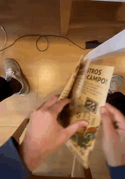
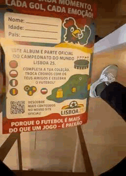

Sometimes I write about things
Road to Lisbon 2025
[19/10/2025] Hace ya un par de meses de la despedida de un muy buen amigo que fuimos a Lisboa. Como habíamos dedicado mucho tiempo a lo largo de nuestra vida a los videojuegos, principalmente FIFA y PES, tematizamos la despedida alrededor del futbol.
Fifa 98 Road to France, pero en este caso Road to Lisbon. Fueron tres los ítems necesarios para hacerla legendaria. Album de cromos, camisetas retro y una buena banda sonora. Link
Os dejo por aquí el album para abrir boca y si alguno lo quiere para su despedida que me escriba y le paso los editables de los cromos tbn

